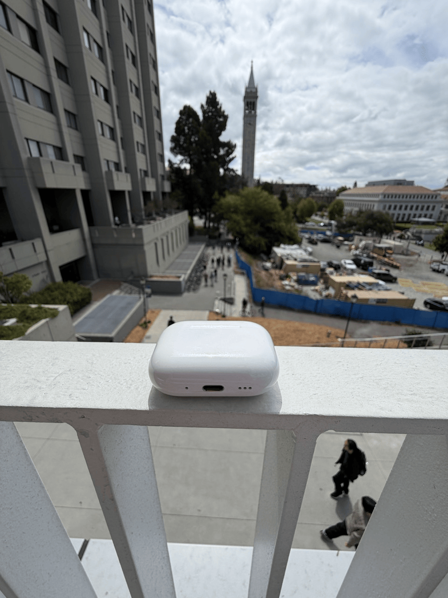

Project 0: Becoming Friends with Your Camera
Selfies
Observation: 1.5x zoom looks better, more proportional, and less frontal at the center of the image.


Buildings
Observation: geometries at a distance of 200m are more flattened.


Dolly Zoom
Observation: the spatial background changes and the object becomes more flattened (less wide) while zooming in.
